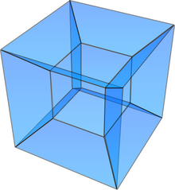

5. Real world
This is the Real world course theme.
[Complete set of notes PDF 206Kb]
5.1. Web
In this lecture we look at...
[Section notes PDF 133Kb]
5.1.01. Databases for the Internet
- Path from DB to User
- Information flow
- Data formats (OO)
- Format transitions
- Limitations/channel
- The Future

5.1.02. OO
- Object orientated approach
- Consistent/optimised development model
- Good approximation of real world
- Closer link to mini-world
- Java and PHP
- DB persistence
- UML
5.1.03. Java and PHP in context
- Java
- JSP (server-side)
- Javascript (client-side)
- PHP
- Server side only
- JSON or XML
- Object communication
- Ideal scenario
- Java – load times
5.1.04. In a perfect world
- Homogenous data format/data model
- DB stores objects instead
- Objects transferred
- Robust
- Lightweight
- Fast
- Consistent (more later in Transactions)
- Caching
5.1.05. In the real world
- Heterogenous data model
- Object translation/wrappers
- Different languages features at different layers
- Minimal subset of OO functionality available end-to-end
- Going to look at information flow/functionality provided
5.1.06. User
- Limitations of being human
- short term memory
- long term familiarity
- language of the Internet
- hypertext linking
- form filling
- Advantages of being human
- impatience, no waiting
- wants instant response
5.1.07. Browser
- Http requests
- Forms
- Post
- Get
- Form fields
- By name, by ID
- Hidden
- Javascript/DOM tree
5.1.08. Internet
- Communication medium
- Good for transferring data
- Not good for transforming data
- e.g. Light in air
- e.g. Signal over CAT5e/UTP cable
5.1.09. Web server
- Straight HTML pages
- Dynamic HTML pages
- PHP example
- JSP example
- As above with RDBMS integration
- PHP PDO example
- As above with Objects
- PHP DBDO example
5.1.10. load, edit, submit, act timeline
{kind=link}
5.1.11. href click, versus form post
- Protocol stack
- Basic up-down
- Shortcuts
- Browser cache
- Web server
- assembled page cache
- php object cache
- DB optimised queries
{kind=link}
5.1.12. Examples from the web
5.2. Decision Support
In this lecture we look at...
[Section notes PDF 85Kb]
5.2.01. Introduction
- Decision support systems (DSS)
- Duplicates of live systems, historical archiving
- Primarily read-only
- Load and refresh operations
- Integrity
- Assumptions about initial data
- Large, indexed, redundancy
5.2.02. DSS Management
- Design
- Logical
- Temporal keys, required to distinquish historical data (since:to
current & during:within interval) - Physical (Hash indexes, Bitmap indexes)
- Controlled Redundancy
- Synchronisation/update propogation
- Synchronous (update driven)
- Asynchronous (query driven)
5.2.03. Data Preparation
- Extract
- pulling from live database system(s)
- Cleansing
- Transformation and Consolidation
- migrating from live or legacy system design
to DSS design - Load (DSS live/query-able)
- Refresh (latest update)
5.2.04. Querying
- Boolean expression complexity
- heavy WHERE clauses
- Join complexity
- Normalised databases, many tables
- Facts distributed across tables
- Joins required to answer complex questions
- Function and Analytic complexity
- Often require non-DBMS functions
- Smaller queries with interleaved code
5.2.05. Data Warehouse
- Specific example of DSS
- Subject-orientated
- e.g. customers/products
- Non-volatile
- once inserted, items cannot be updated
- Time variant
- Temporal keys
- Accuracy and granularity issues
5.2.06. DB Company organisation
- By example
{kind=link}
5.2.07. Dimensional Schema
- Consider product, customer, sales data
- Each sale represents a specific event
- when a product was purchased
- when a customer bought something
- when a sale was recorded
- Each can be thought of as an axis
or dimension (3D) - Each occurred at a moment in time (4D)
5.2.08. Star schemae and Hypercubes
- Data centralised in ‘fact’ table
- Referencing creates star pattern
- Dimensions as satellite tables
- Normalising creates snowflake schema
{kind=link}
5.2.09. Hypercubes
- Hypercube is also a multi-processor topology inspired by a 4D shape
- Used by Intel’s iPSC/2
- Good at certain database operations
- e.g. Duplicate removal
- MIMD
